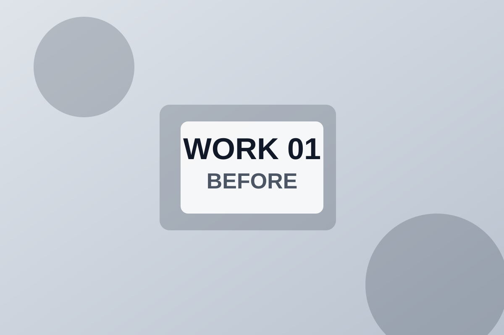
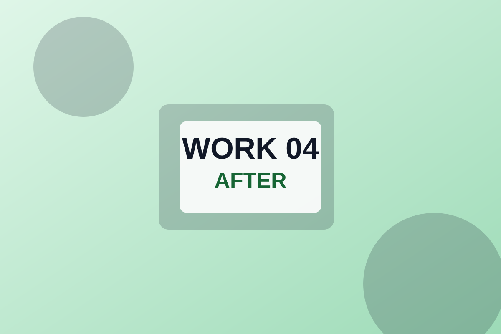
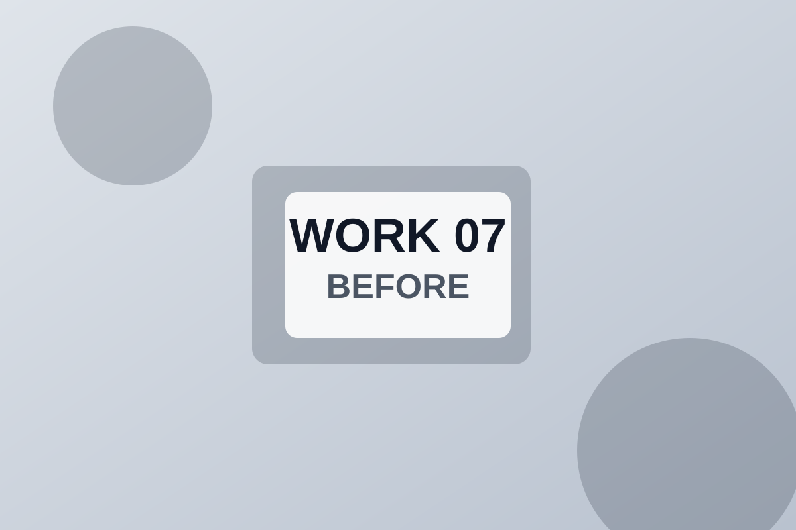
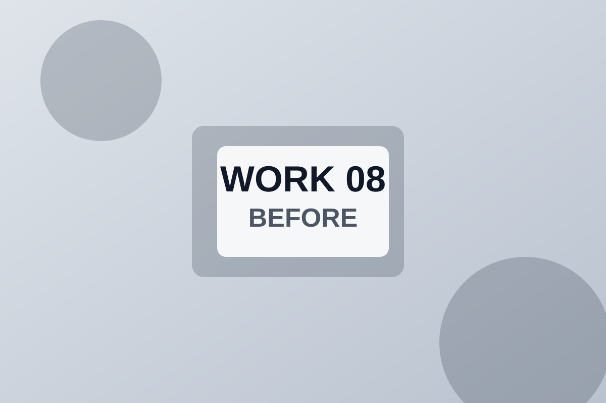

戸建て外壁塗装（モルタル）
課題：ひび割れと色褪せが目立ち雨水浸入が不安。提案：クラック補修後に弾性塗料で3工程塗装。結果：防水性と外観を同時に改善しました。
実際の工事内容を、施工前後の写真とあわせて掲載しています。
※画像はプレースホルダーです。

課題：ひび割れと色褪せが目立ち雨水浸入が不安。提案：クラック補修後に弾性塗料で3工程塗装。結果：防水性と外観を同時に改善しました。
課題：屋根材の吸水とコケ発生。提案：高圧洗浄と縁切りを行い遮熱塗料を施工。結果：見た目の回復に加え、温度上昇の軽減を実感いただきました。
課題：表面の膨れと排水不良。提案：下地調整後に通気緩衝工法で防水層を再構築。結果：雨天後の滞水が減り、漏水不安を解消できました。

課題：目地の硬化と破断が進行。提案：既存シール撤去後に高耐久シーリング材へ打ち替え。結果：外壁の防水性能と追従性を回復しました。
課題：退色と共用部鉄部のサビ。提案：居住者動線に配慮した工程で外壁と鉄部を同時施工。結果：建物印象が改善し、管理会社の点検評価も向上しました。
課題：ヤニ汚れと経年の黄ばみ。提案：営業後の夜間作業で低臭塗料を採用。結果：短期間で明るい印象へ刷新し、営業への影響を抑えられました。

課題：サビと塗膜剥離による腐食進行。提案：ケレン後に防錆下塗りを強化し仕上げ塗装。結果：安全性を確保し、長期的なメンテナンス負担を軽減しました。

課題：小面積の剥がれと汚れで外観が不均一。提案：対象箇所のみ補修し既存色に合わせて調色。結果：全面改修せずに見た目を整え、コストを最適化しました。